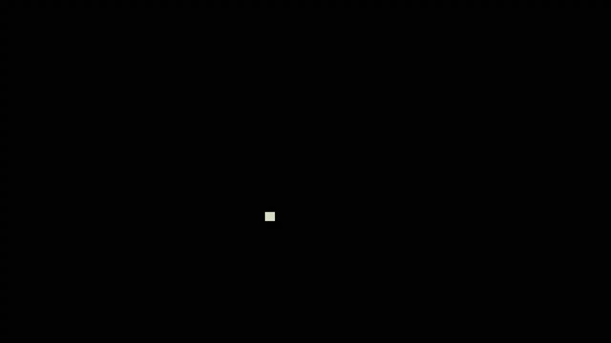
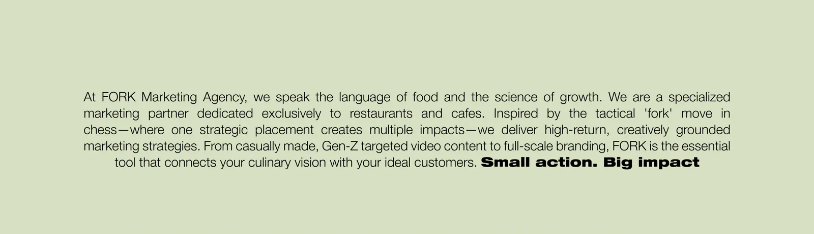
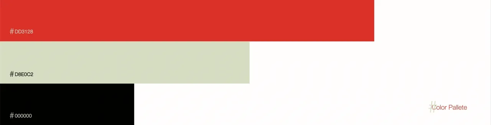
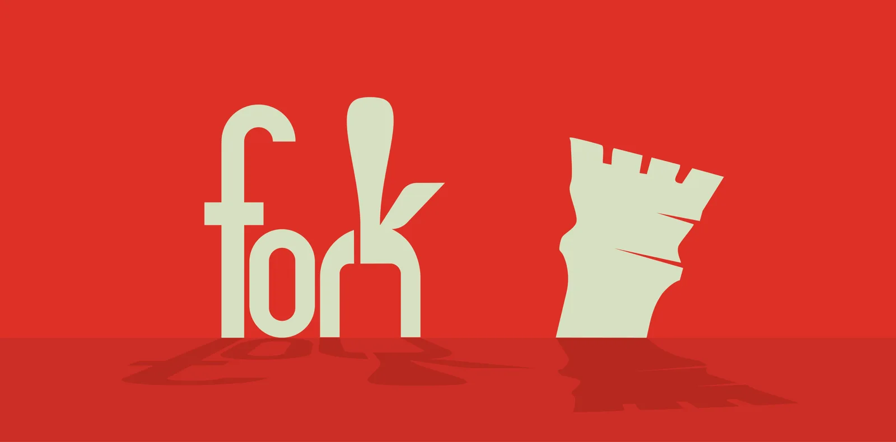
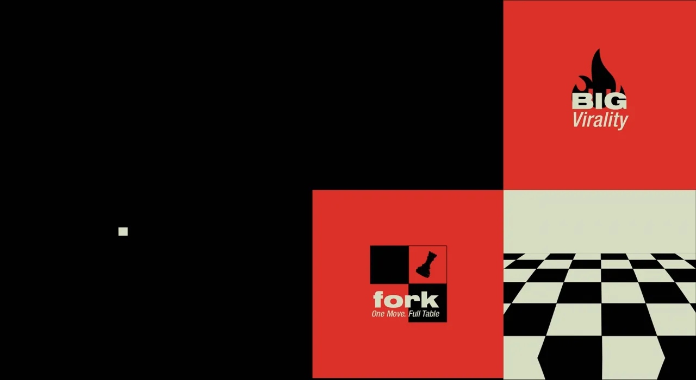
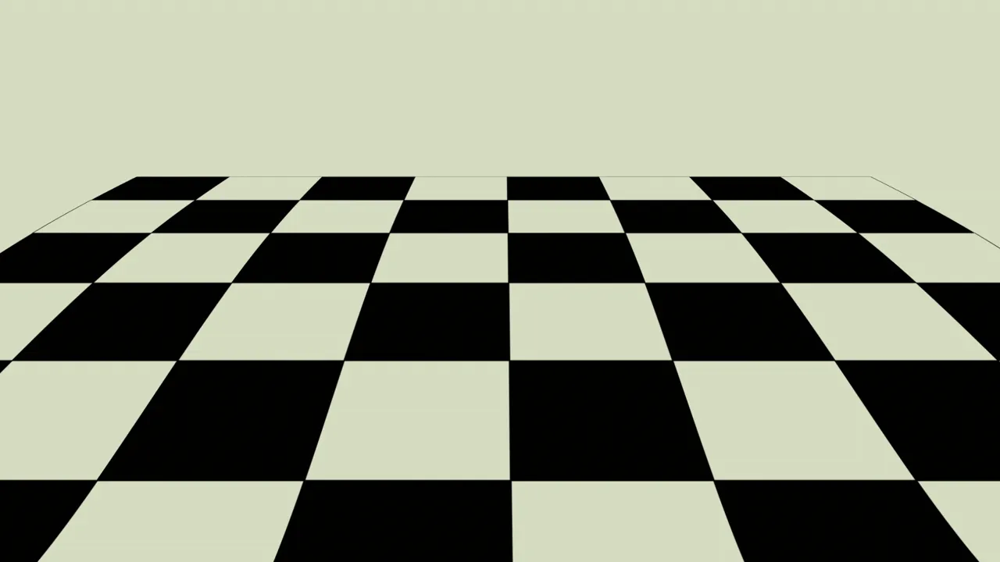
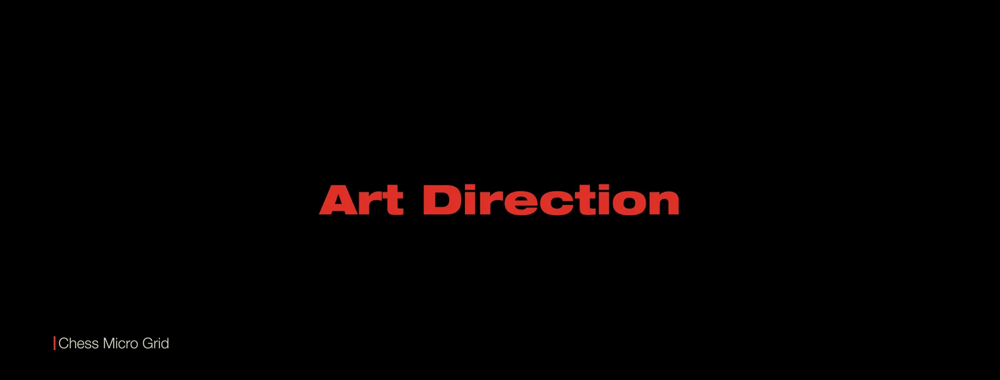

Brand identity / 2026
FORK Agency Branding
FORK Agency is a branding-led visual identity project crafted for a creative agency that needed a bold, sharp, and memorable presence. The system was designed to feel energetic and contemporary, while staying minimal enough to work across presentations, social media, and everyday brand communication
A focused color palette was chosen to keep the brand recognizable and easy to work with.
Creative Direction & Branding: Kareem Abdelaziz Motion Design & Sonic Design : Gamal Ali Agency: Glitch Agency



A focused color palette was chosen to keep the brand recognizable and easy to work with.




Creative Direction & Branding: Kareem Abdelaziz Motion Design & Sonic Design : Gamal Ali Agency: Glitch Agency